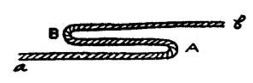
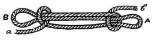

Simpul erat. Gunanya untuk memendekkan tali tanpa pemotongan.
Cara membuat simpul erat :
1. tekuk tali dengan dua lengkungan (A dan B), dan perhatikan ujung tali (a dan b)

2. Ujung tali (a) lingkarkanlah pada lekungan (B) kemudian buatlah simpul dengan arah tali seperti gambar. demikian pula dengan ujung tali (b) lingkarkan pada lengkungan (A) dengan simpul yang sama.
